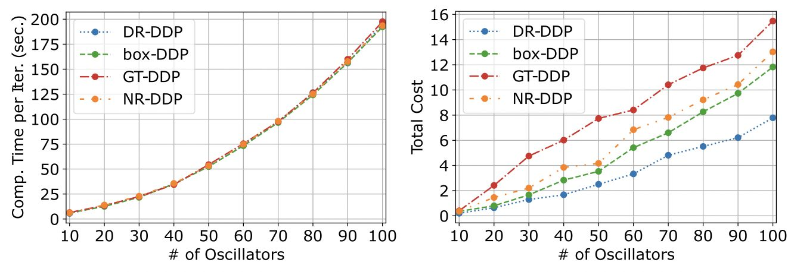

cdc23-2
Data-driven stochastic optimization using upper confidence bounds: Performance guarantees and distributional robustness. Youngchae Cho, and Insoon Yang. IEEE Conference on Decision and Control (CDC) , 2023.
cdc23-1
On concentration bounds for Bayesian identification of linear non-Gaussian systems. Yeoneung Kim, Gihun Kim, and Insoon Yang. IEEE Conference on Decision and Control (CDC) , 2023.

[CDC] 3 papers
The following three papers from our group have been accepted for presentation at the 62nd IEEE Conference on Decision and Control (CDC) . Distributionally robust differential dynamic programming with Wasserstein distance. by Astghik Hakobyan, and Insoon ...
ICML2023
Unifying Nesterov’s accelerated gradient methods for convex and strongly convex objective functions. Jungbin Kim, and Insoon Yang. International Conference on Machine Learning(ICML), 2023. (Oral, acceptance rate: 2.4%)

[ICML (Oral)] Unifying Nesterov’s AGM for convex and strongly convex objective functions
The paper “Unifying Nesterov’s accelerated gradient methods for convex and strongly convex objective functions” has been accepted for Oral presentation at the 40th International Conference on Machine Learning (ICML) . Unifying Nesterov’s accelerated gradient methods for ...